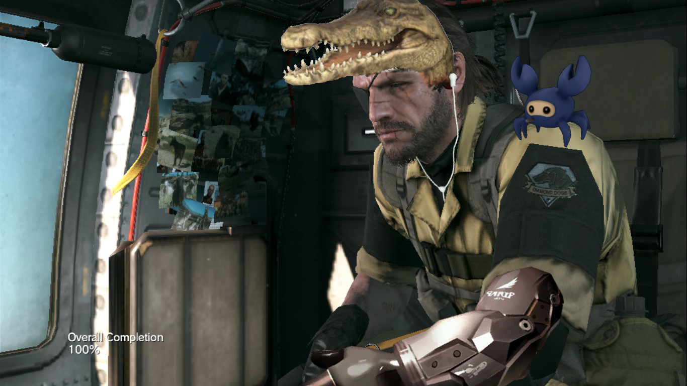
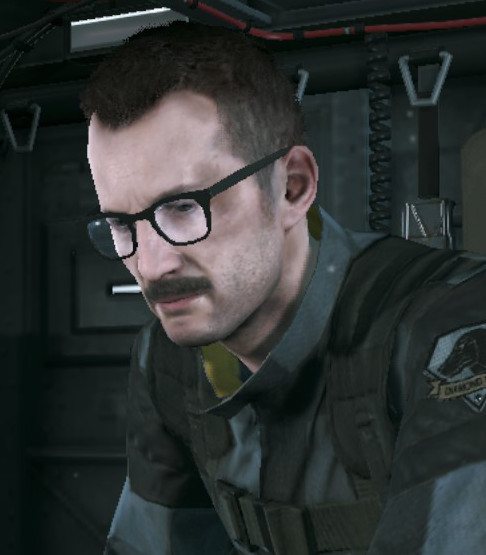
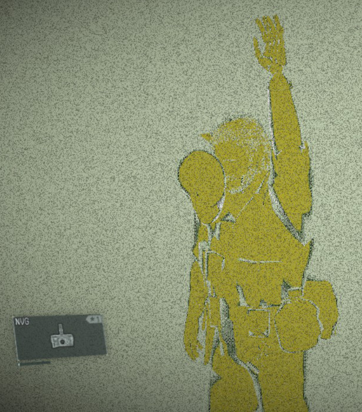
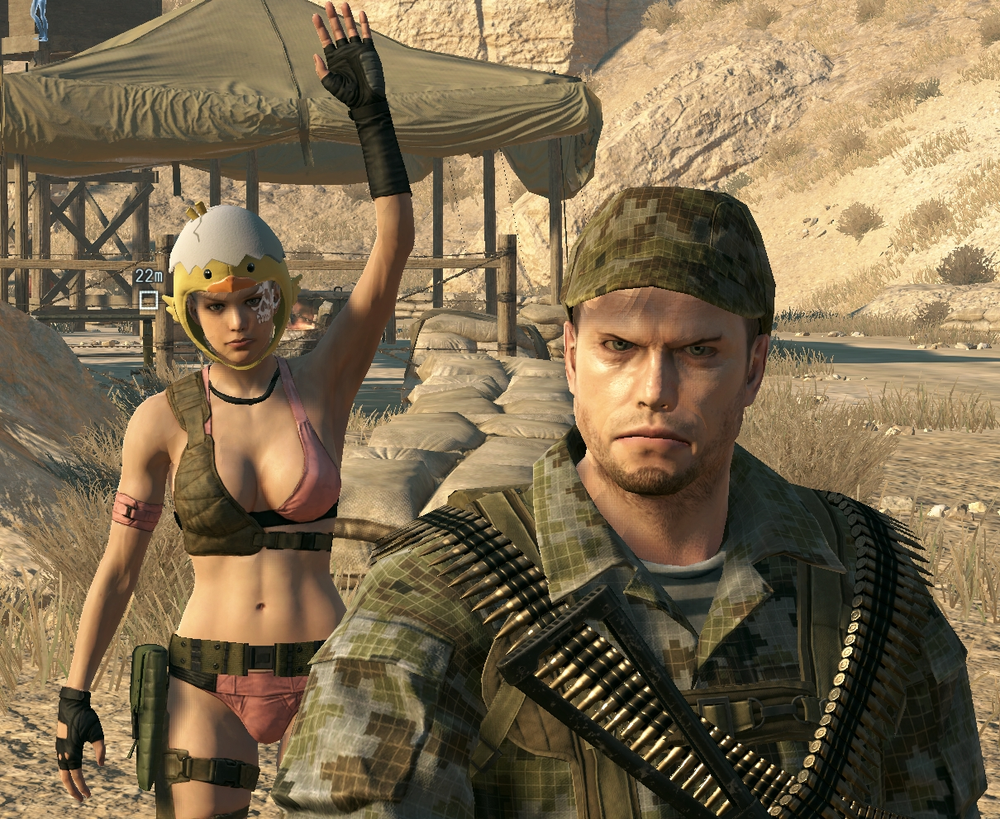
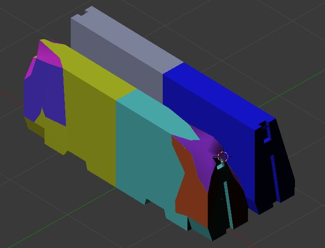
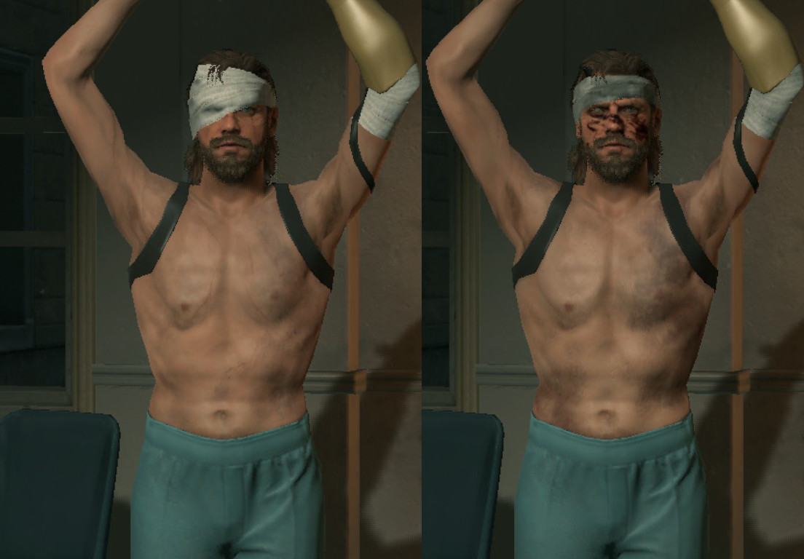
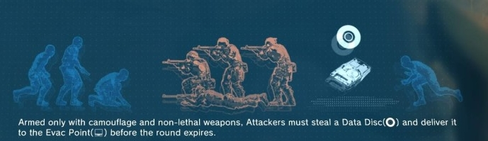
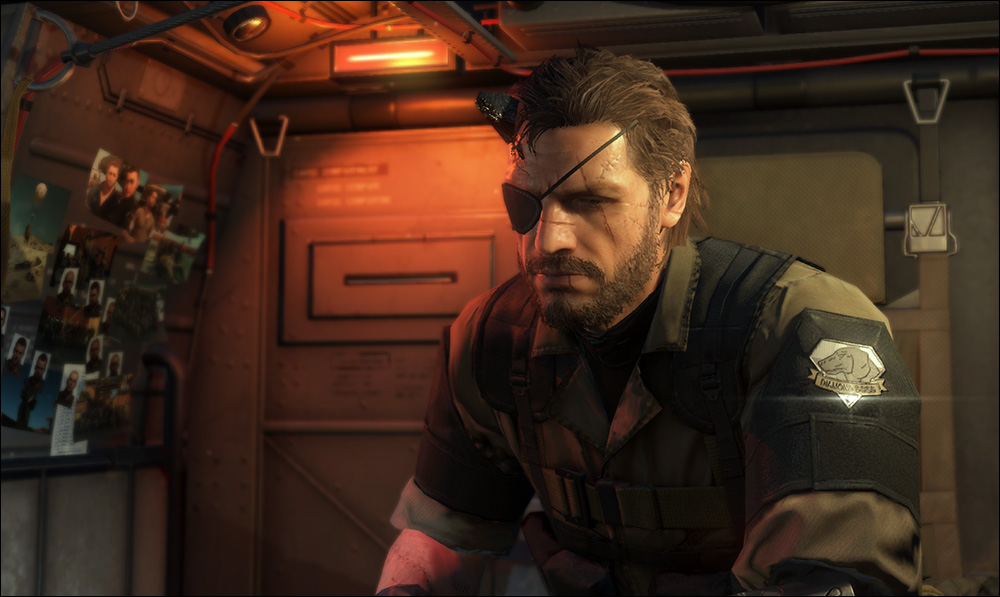

Cosmetics
Introduction
Throughout history, men have worn hats as a way of showing how much better they are than other men. “I buy hats,” a behatted man seems to say. “I am better than you.”
In wartime, hats were a useful way of conferring rank, and ensuring that casualties were confined to the lower classes (hence the famous command of “Don't fire till you see the tops of their heads” at the Battle of Bunker Hill by William Prescott, a general renowned for only shooting enemy combatants who were poor). During peacetime, hats have been instrumental for men to let the non-hatted know just who is wearing the hat around here.
 People need cosmetics and need them badly. MGSV is not an exception.
A lot of cosmetics were introduced to Metal Gear with MGO3 - wide variety of headgear along with swimsuits and other tactical stuff. Unfortunately KONAMI forgot to add them to singleplayer. It took them about a year to start porting MGO cosmetics back to TPP as FOB event rewards. Judging by amount of cosmetics, it will take them years to port everything (if they are going to port all of it). But models are already in the game - what stops us from modding it from MGO to TPP?
Porting cosmetics
The easiest way would be direct model porting. It is achieved by editing already existing models, usually in hex editor or some 3d software. All model mods on nexusmods are made using those methods. It works, MGO cosmetics are in TPP, but there are issues.
- Every time you want a cosmetics change, you will have to repack the game archives;
- process of editing models is definitely not a fast one;
- cannot switch cosmetics on the fly like the game does;
- mod packs are huge.
Conclusion: replacing/editing models sucks. It works, but why would we replace models like that, when the game can do the same programmatically?
Coder's way
Game is capable of manipulating models/cosmetics in the real time, but how does it do that? I've found 5 ways:
- Changing model using user variables (vars.playerFaceId);
- adding new weapon entries;
- chicken hats;
- changing model using fv2 files;
- changing model using .parts files.
User variables
By changing vars.playerFaceId and vars.playerType(was it playertype?) you
can change your face at will (assuming you play as DD soldier). You can see full list of faces
in prettified file Soldier2FaceAndBodyData.lua in
Infinite Heaven mod.
Via changing variables you select one of the predefined face variations - that includes hair, hair colour,
skin colour, face paintings, eye color, gender, etc - studying the file will give you a lot of information
about that. You can do it using IH - see https://youtu.be/a0PJJVkDQe8.
What prevents us from using that method? The problem is - faces are pre-baked. Let's take a look at bioengineer from mission 5 "Over the Fence". His glasses are a part of his face and are unseparatable.

More than that, we don't have full control on what will be replaced - we are still bound by pre-baked models. That means that for every head/body cosmetic we will have to make a separate model which will consist of regular model + mgo cosmetic. Not good since we need more freedom - like in mgo where you just put hats on yourself without any modifications to your face/outfit.
Conclusion: it sucks, not enough freedom, still need to edit models.
New weapon entries
By putting on your Night Vision Goggles you change your appearance by the press of the button.
Sounds perfect - 8 slots of 'items' gives you some variety. But of course it only sounds nice.
Issues:
- Green tint for the duration;
- hat model is floating in front of your head, not on top of it;
- texture problems (not like it matters for now);
- NVG has a meter (probably can be set to infinite, equip icon can be hidden as well). 0 = NVG disappears.

Conclusion: it sucks, can't see hats.
Chicken hats
After failing a couple of times game suggests to equip a chicken/chick hat which is attached to
the head and looks like a hat - just like we need. No, it doesn't work well enough.
Issues:
- You need to activate chick mode first - it requires reloading a checkpoint so it is not realtime;
- there are only 2 models to replace, which gives us little to none variety (and more frequent repacking);
- hat is attached to the head, what about body costumes (ie underboob outfit)?
- you are stuck in chick/chicken mode, enemies won't attack and chicken head disappears after 3 alerts.

Conclusion: it sucks, not enough freedom, chicken mode on, you are clucking.
FV2 files
Models in the game are hidden in fmdl files. Important thing is, you can have multiplie models in one fmdl file.
It was discovered by cra0kalo and volfin - http://forum.xentax.com/viewtopic.php?p=102492#p102492.

Everything below is my theory on how fv2 files work.
FOVA probably stands for FOxVAriations or whatever.
There are two instances of game directly using fv2 files to change object's appearance.
master/chunk3/Assets/tpp/level/mission2/quest/mtbs/Command/quest_child_dog.lua- DD's model will change in cutscene (the one where doggo becomes big doggo from small doggo).- Prologue/truth mission:
master/0/00/Assets/tpp/level/mission2/story/s10010/s10010_sequence.lua: s10010_sequence.ChangePlayerFova
By providing right fv2 file snake drastically changes appearance - his bandage is removed, he gets burns and cuts body-wide (mesh and texture manipulations). All of this without any loadings, instanst. Sounds perfect for our cause.

Issues:
- How do we add hat cosmetics into our models? Not as part of main model, but as a separate
model as seen on screenshot from xentax thread? This will require modifying every model -
snake, hospital snake, dd soldier etc (see
tpp/master/0/00/Tpp/start.lua, Player.RegisterPartsPackagePath). That will be a huge advantage since there will be many cosmetics in one file giving us freedom and reducing mod size; - how do we make a proper fv2 file that will switch models properly? This is the biggest problem - fv2 files are tiny, have some bytes in them and yet they do so much;
- applying wrong fv2 file will crash the game.
Conclusion: it is a huge improvement over all methods above, multiplie body-wide cosmetics. No way of implementing with tools we have atm since cra0kalo broke his release server and apparently stopped his research - https://facepunch.com/showthread.php?t=1443449&p=49336023&viewfull=1#post49336023.
Parts
All objects in the game consist of parts. As you have seen above, game has different .parts for different types of player. .parts files bind together everything related to the object - .fmdl model, .sim/.ph physics, .frig rig files, .frdv bone files and everything else. Convert it to readable xml using FoxTool.
For example, skullface (chunk0/Assets/tpp/pack/mission2/common/mis_com_skullface.fpkd)
consist of his model, 2 models of his hat, 3 ampules with parasites and a case. This sounds perfect.
Nothing stops us from adding hats to player parts file, just copypaste the structure from skullface and
change some paths, pack model/textures and viola. Or at least that's what I thought.
Unfortunately game needs to know which models to render - skullface doesn't run around with case and 2 hats all the time, even though they are referenced in .parts file. How does the game knows what to render at this exact moment? I suppose that is decided by fv2 files, which are a mystery, or it is defined somewhere in demo files.

There is some code in mgo, that realizes parts and attaches them one to another.
See file 114716d115c13_fpkd/Assets/mgo/script/actor/mgoTeamsneakFlag.lua - mgoTeamsneakFlag.lua
exists in multiplie fpks, there are unminified versions of that file with nice variable names. Function
this.Construct is the function that is called twice while loading mgo level (cloak and dagger mode).
Apparently it creates disk objects and attaches effects to it. Game also attaches blue disk effect above
your head using .parts file using code from that lua file.
if PartsIndex == nil then
actor:DetachAndTearDownAllParts()
local success = nil
success, PartsIndex = MgoParts.Realize( PartsFile, 1, 1 )
if not success then
PartsIndex = nil
Fox.Error( "mgoFlag:Construct(): Failed to realize parts " .. PartsFile )
else
actor:AttachParts( PartsIndex )
MgoParts.SetVisibility( PartsIndex, true )
end
endHowever I was unable to reproduce it no matter what. What is 'actor'? It has some nice methods, but I can't find where do you get it - probably this part is called by C part of the engine. There are no classes with these methods in my lua dump either. And even if we find out, what is that 'actor' thing is, there might be a chance that there is no such thing in TPP. Some classes are MGO exclusive (such as MGOactor and Gear), so even though that 'actor' can attach parts with a handy method, there might be no such class for main game.
Actor instance methods:
- SetTransform
- AttachToGameObject
- AddActionForPlayer
- IsAttached
- GetInitialTransform
- UpdateMarker
- GetMessageValet
- SendMessage
- DisableMarker
- GetTable
- RequestLineCheck
- RemoveActionForPlayer
- SendTriggeredEventSignal
- GetParm
- GetGameObjectId
- GetScaledTime
- GetTransform
- DetachAndTearDownAllParts
- SetActive
- AttachParts
- DetachParts
- Detach
- GetAttachedToGameObject
- IsActive
- EnableMarker
I am pretty sure that similar code runs when you call Player.AttachGasMask function (Shining Lights mission): game realizes a model, then attaches it to your mouth bone/connect point. Unfortunately the realization is hidden in C.
Let's take a look back - at Ground Zeroes. Snake gets a nice cigar after finishing main mission
- data_02/title_datas_fpkd/Assets/tpp/ui/GraphAsset/gz/gz_title_message.lua
Fox.Log(":: set tobacco and tobacco motion::")
TppDemoPuppet.CreateAttachmentAndAttachToMtp("title_sneak","cig","MTP_RHAND_A")
TppDemoPuppet.CreateAttachmentPartsEffect("title_sneak", "cig", "CigarSmoke" )
TppDemoPuppet.SetAttachmentMeshVisible("title_sneak", "cig", "MESH_FIRE_IV", true )I assume that "CigarSmoke" and "cig" are listed in .parts file for snake, because I cannot unpack corresponding fpkd files (gzs_tool gives OoM exception while MGSV_FPK_TOOL just closes). See
data_02\Assets\tpp\pack\player directory.
Unfortunately we don't have direct access to TppDemoPuppet class in TPP. Probably it was too low-leveled and KojiPro decided to make nice wraps around it and hide parent class.
It seems that effects/attachments have to be listed in .parts listing, judging by file
chunk0\Assets\tpp\pack\player\parts\plparts_normal_fpkd\Assets\tpp\parts\chara\sna\sna0_main0_def_v00.parts
A closer look:
<entity class="EffectDescription" classVersion="6" addr="0x067B5DB0" unknown1="232" unknown2="39854">
<staticProperties>
<property name="name" type="String" container="StaticArray" arraySize="1">
<value>EffectDescription0009</value>
</property>
<property name="partName" type="String" container="StaticArray" arraySize="1">
<value>EmblemFlare</value>
</property>
<property name="connectDestinationSkelNames" type="String" container="DynamicArray" arraySize="1">
<value>SKL_011_LUARM</value>
</property>Player.SetUseBlackDiamondEmblem() function - no clear realization as in GZ, another wrapper function.

Conclusion: This is the way how things should be done - attaching objects one to another using code. The moment we understand what 'actor' is and how to 'realize' parts without MgoParts class, realtime change of cosmetics in singleplayer will become a reality: just pack some hat fmdls into your player pack, add some entries in .parts file then change cosmetics with a couple of code strings. Until then hex editor and humongous mods are the only answer.